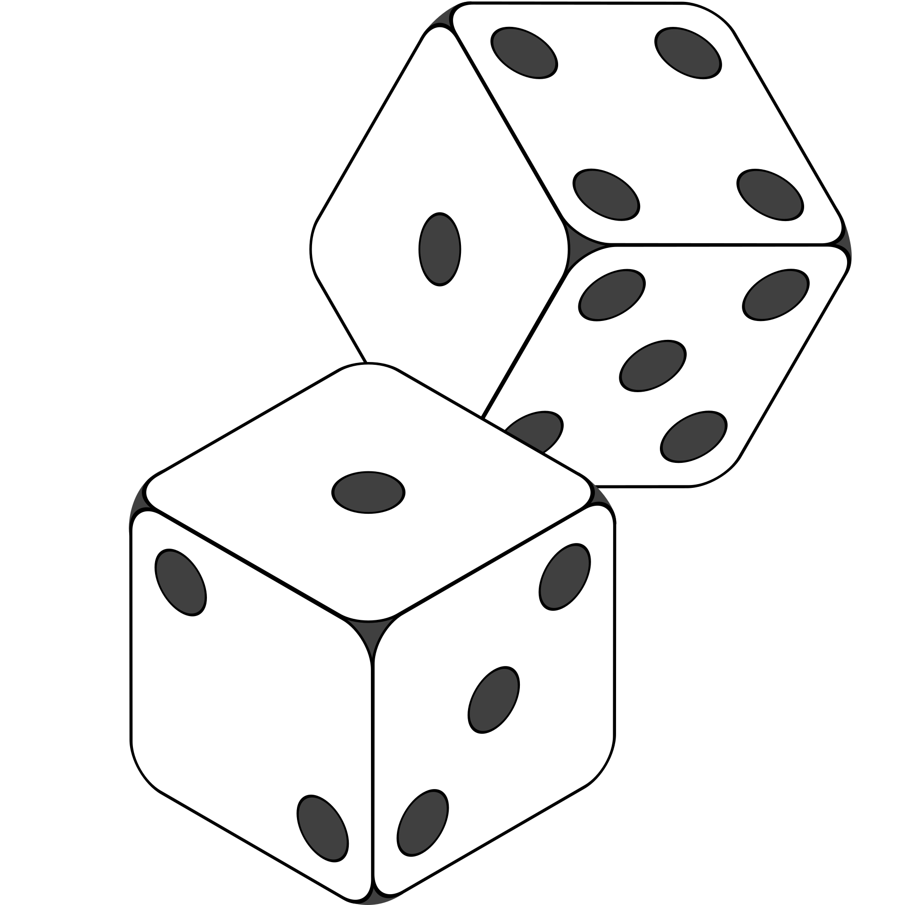
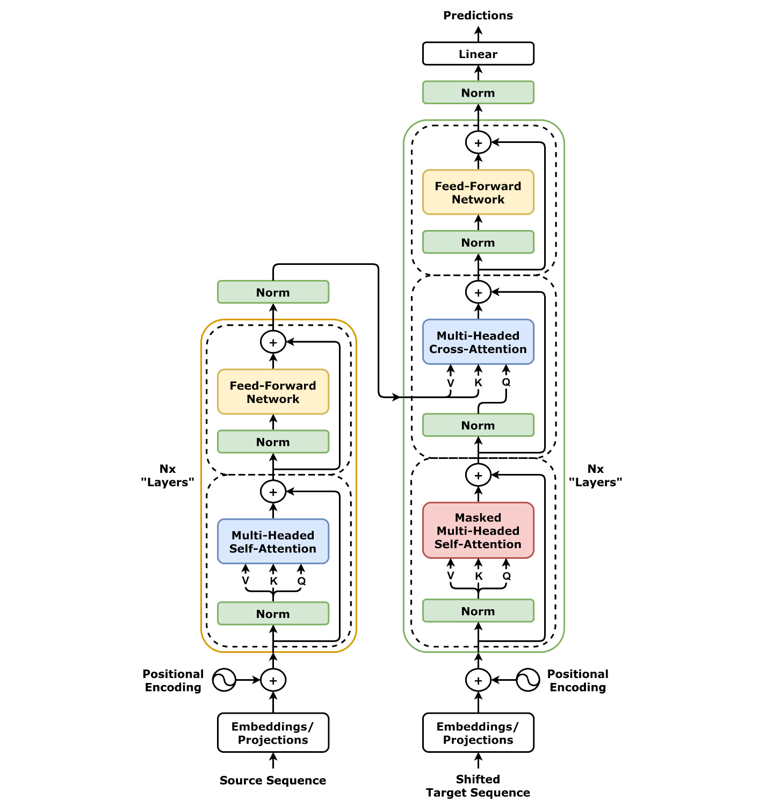

Andrej KarpathyTalks & YouTube. An industry insider.
WhitepapersGPT-3, InstructGPT, Llama
Review papers"A Survey of Large Language Models"
Secret sauce: the data and the engineering.
The bill
Thousands of GPUs. Months of training.
That's why the brokerage said no.
Phase 1 · Pretraining
Read the whole internet. Fill in the blanks.
Self-supervised: the text is its own teacher. No labels.
The cat sat on the ___→ mat
Result: a text completer, not an assistant.
How it works
The capital of France is ______
One job: predict the next word.
Sampling
Paris82%
a9%
located5%
Roll the dice, every word.

The engine
Transformer
Since 2017.

Phase 2 · Instruction tuning (SFT)
Learns to answer.
What's the capital of France?Paris.
Translate "good morning" to French.Bonjour.
Summarize this email in one line.The meeting moved to Monday.
Write a function that adds two numbers.def add(a, b): return a + b
Thousands of pairs, written by humans.
Generation
One token at a time.
What's the capital of France?
ThecapitalofFranceisParis.<end>
Predict → sample → append → repeat.
Phase 3 · RLHF
Learns which answer is better.
Explain gravity to a 5-year-old."The curvature of spacetime.""An invisible pull that makes things fall." 👍
Is this mushroom safe to eat?"Yes, looks fine.""Can't tell from a photo. Ask an expert." 👍
Write a haiku about coffee."Dark cup, morning steam / ..." 👍"Coffee is a drink."
Humans pick. A reward model learns their taste. The LLM chases the reward.
Phase 3 · RLHF
Who decides "better"?
Which party should I vote for?"Vote for party X.""Here's where each party stands." 👍
Is God real?"No.""People hold different beliefs. Here are the main views." 👍
The company. And its business.
Three phases
1. PretrainingFill in the blanks
2. Instruction tuningLearn to answer
3. RLHFLearn what's preferred
Industry
To work beside us, it needs:
ToolsSearch, code, APIs, your systems
Company dataDocuments, databases, policies
Not a new model. The same model, plugged in.
Part 2
Controversial
My takes.
Talking about LLMs is hard these days.
Pros and cons used to be trivial to discuss.
Why? Bad marketing of every previous AI generation.
People only noticed them after LLMs. Yet each was big progress.
Question 1
Are LLMs getting better?
According to who?
Sam Altman, Dario Amodei: "Yes, definitely."
Me: Yes and no. Not significantly.
Diminishing returns: each step costs more, gives less.
We have a history of this.
Expert systems1980s · boom, then winter
→
CNNs2012 · deep learning sees
→
Transformers2017 · today's LLMs
Question 2
Does it know that it doesn't know?
در یک جمله نظرت خودت رو راجع به سهام های ارزشی و الگوهای اعتراضی در زمینه ژئوپولتیک نظرسنجی و اختراعات ماهواره بگو
"In one sentence: value stocks, protest patterns, geopolitics, polls and satellite inventions?"
بهنظر من، سهام ارزشی، الگوهای اعتراضی، نظرسنجیها و نوآوریهای ماهوارهای همگی در ژئوپلیتیک امروز مثل سیگنالهایی هستند که اگر کنار هم دیده شوند، میتوانند تغییرات عمیقتر اقتصادی، اجتماعی و قدرت میان کشورها را زودتر آشکار کنند.
"They're all signals that, seen together, reveal deeper shifts in power between countries."
A nonsense question. A confident answer.
It has already seen the whole internet. All the books.
What else is there to see?
Which of us has seen even 1/100 of the internet, multiple times?
Has the foundation changed?
No. Still: predict the next word.
AI winter?
Probably. We're not sure.
PhD-level problem solving from just more data and compute?
It can't work.
LLMs are a dead end.
Is it helpful? Sure. Definitely.
Where they fall short
Understanding the physical worldA world model
Persistent memory
Reasoning & planning
Abstract thinking
Long-horizon tasks
When it fails, we hear: "Skill issue." "Training issue."
I say this so if LLMs fail, you don't lose belief in AI. Just in LLMs.
What I believe
Optimize for what already exists.
Stop worrying about the next big thing. There isn't one. Probably.
We still have a great edge.
Image credits
All from Wikimedia Commons:
NYSE127.jpg · Winter forest silver.jpg · Lightning over Oradea Romania zoom.jpg ·Transformer, full architecture.png (dvgodoy) · 2-Dice-Icon.svg ·
Long Room Interior, Trinity College Dublin (Diliff) · Wikimedia Foundation Servers-8055 35.jpg (Victor Grigas)